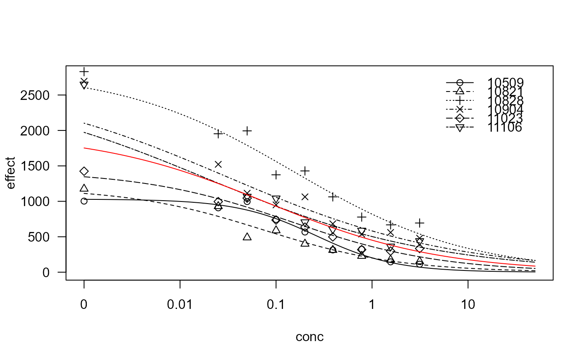

Vinclozolin from AR in vitro assay
vinclozolin.RdDose-response experiment with vinclozolin in an AR reporter gene assay
Usage
data(vinclozolin)Format
A data frame with 53 observations on the following 3 variables.
expera factor with levels
105091082110828109041102311106conca numeric vector of concentrations of vinclozolin
effecta numeric vector of luminescense effects
Details
The basic dose-response experiment was repeated 6 times on different days. Chinese Hamster Ovary cells were exposed to various concentrations of vinclozolin for 22 hours and the resulting luminescense effects were recorded.
Data are part of mixture experiment reported in Nellemann et al (2003).
Source
Nellemann C., Dalgaard M., Lam H.R. and Vinggaard A.M. (2003) The combined effects of vinclozolin and procymidone do not deviate from expected additivity in vitro and in vivo, Toxicological Sciences, 71, 251–262.
Examples
library(drc)
vinclozolin.m1 <- drm(effect~conc, exper, data=vinclozolin, fct = LL.3())
plot(vinclozolin.m1, xlim=c(0,50), ylim=c(0,2800), conLevel=1e-4)
#> Warning: "conLevel" is not a graphical parameter
#> Warning: "conLevel" is not a graphical parameter
#> Warning: "conLevel" is not a graphical parameter
#> Warning: "conLevel" is not a graphical parameter
#> Warning: "conLevel" is not a graphical parameter
#> Warning: "conLevel" is not a graphical parameter
#> Warning: "conLevel" is not a graphical parameter
#> Warning: "conLevel" is not a graphical parameter
#> Warning: "conLevel" is not a graphical parameter
#> Warning: "conLevel" is not a graphical parameter
#> Warning: "conLevel" is not a graphical parameter
#> Warning: "conLevel" is not a graphical parameter
#> Warning: "conLevel" is not a graphical parameter
#> Warning: "conLevel" is not a graphical parameter
#> Warning: "conLevel" is not a graphical parameter
vinclozolin.m2 <- drm(effect~conc, data=vinclozolin, fct = LL.3())
plot(vinclozolin.m2, xlim=c(0,50), conLevel=1e-4, add=TRUE, type="none", col="red")
#> Warning: "conLevel" is not a graphical parameter

## Are the ED50 values indetical across experiments?
vinclozolin.m3 <- update(vinclozolin.m1, pmodels=data.frame(exper, exper, 1))
anova(vinclozolin.m3, vinclozolin.m1) # No!
#>
#> 1st model
#> fct: LL.3()
#> pmodels: exper, exper, 1
#> 2nd model
#> fct: LL.3()
#> pmodels: exper (for all parameters)
#>
#> ANOVA table
#>
#> ModelDf RSS Df F value p value
#> 1st model 40 972732
#> 2nd model 35 385169 5 10.678 0.000